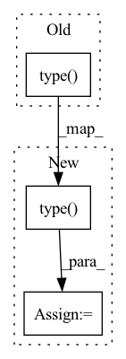

Pattern ID :2077
Before Change
// [*, N_res, N_res, c_z]
pair_emb = tf_emb_i[..., None, :] + tf_emb_j[..., None, :, :]
pair_emb = pair_emb + self.relpos(ri.type( pair_emb.dtype) )
// [*, N_clust, N_res, c_m]
n_clust = msa.shape[-3]After Change
tf_emb_j = self.linear_tf_z_j(tf)
// [*, N_res, N_res, c_z]
pair_emb = self.relpos(ri.type( tf_emb_i.dtype) )
pair_emb = add(pair_emb,
tf_emb_i[..., None, :],
inplace=inplace_safe
)
pair_emb = add(pair_emb,
tf_emb_j[..., None, :, :],
inplace=inplace_safe
)In pattern: SUPERPATTERN
Frequency: 5
Non-data size: 3
Instances Fragment ID: 13898804
Project Name: aqlaboratory/openfold
Commit Name: 5aa21eae97aacaf58193a0a3f3618b4267085552
Time: 2022-06-20
Author: gahdritz@gmail.com
File Name: openfold/model/embedders.py
M Class Name: InputEmbedder
N Class Name: InputEmbedder
M Method Name: forward(4)
N Method Name: forward(4)
M Parent Class: nn.Module
N Parent Class: nn.Module
M File Name: openfold/model/embedders.py
N File Name: openfold/model/embedders.py
M Start Line: 110
M End Line: 115
N Start Line: 114
N End Line: 129
Before Change
self.weights = nn.Parameter(torch.zeros(length, heads, dim))
def forward(self, q):
emb = torch.einsum("bhid,jhd->bhij", q, self.weights.type( q.dtype) ) * self.scale
return shift(emb)
// feedforwardAfter Change
def forward(self, q, mem_len = 0):
seq_len = q.shape[2] + mem_len
weights = self.weights[:seq_len].type( q.dtype)
emb = torch.einsum("bhid,jhd->bhij", q, weights) * self.scale
return shift(emb)
// feedforward Fragment ID: 13898806
Project Name: lucidrains/compressive-transformer-pytorch
Commit Name: 180a94aabedb8da459f9fb4c7a3dc2e5858c4fb9
Time: 2020-06-30
Author: lucidrains@gmail.com
File Name: compressive_transformer_pytorch/compressive_transformer_pytorch.py
M Class Name: RelativePositionalEmbedding
N Class Name: RelativePositionalEmbedding
M Method Name: forward(3)
N Method Name: forward(2)
M Parent Class: nn.Module
N Parent Class: nn.Module
M File Name: compressive_transformer_pytorch/compressive_transformer_pytorch.py
N File Name: compressive_transformer_pytorch/compressive_transformer_pytorch.py
M Start Line: 47
M End Line: 47
N Start Line: 49
N End Line: 52
Before Change
// basically swapping the order of summation and elementwise product
fused_tensor = 1
for (modality, factor) in zip(modalities, self.factors):
modality_withones = torch.cat((Variable(torch.ones(batch_size, 1).type( modality.dtype) , requires_grad=False), modality), dim=1)
modality_factor = torch.matmul(modality_withones, factor)
fused_tensor = fused_tensor * modality_factor
After Change
// basically swapping the order of summation and elementwise product
fused_tensor = 1
for (modality, factor) in zip(modalities, self.factors):
ones = Variable(torch.ones(batch_size, 1).type( modality.dtype) , requires_grad=False).cuda()
if self.flatten:
modality_withones = torch.cat((ones, torch.flatten(modality,start_dim=1)), dim=1)
else:
modality_withones = torch.cat((ones, modality), dim=1)
modality_factor = torch.matmul(modality_withones, factor)
fused_tensor = fused_tensor * modality_factor
Fragment ID: 13898807
Project Name: pliang279/multibench
Commit Name: ae1abdad3e0c823a97d725100dba572f30fff33f
Time: 2021-05-16
Author: ylyu1@andrew.cmu.edu
File Name: fusions/common_fusions.py
M Class Name: LowRankTensorFusion
N Class Name: LowRankTensorFusion
M Method Name: forward(3)
N Method Name: forward(3)
M Parent Class: nn.Module
N Parent Class: nn.Module
M File Name: fusions/common_fusions.py
N File Name: fusions/common_fusions.py
M Start Line: 214
M End Line: 215
N Start Line: 213
N End Line: 219
Before Change
// basically swapping the order of summation and elementwise product
fused_tensor = 1
for (modality, factor) in zip(modalities, self.factors):
modality_withones = torch.cat((Variable(torch.ones(batch_size, 1).type( modality.dtype) , requires_grad=False), modality), dim=1)
modality_factor = torch.matmul(modality_withones, factor)
fused_tensor = fused_tensor * modality_factor
After Change
// basically swapping the order of summation and elementwise product
fused_tensor = 1
for (modality, factor) in zip(modalities, self.factors):
ones = Variable(torch.ones(batch_size, 1).type( modality.dtype) , requires_grad=False).cuda()
if self.flatten:
modality_withones = torch.cat((ones, torch.flatten(modality,start_dim=1)), dim=1)
else:
modality_withones = torch.cat((ones, modality), dim=1)
modality_factor = torch.matmul(modality_withones, factor)
fused_tensor = fused_tensor * modality_factor
Fragment ID: 13898801
Project Name: pliang279/multibench
Commit Name: 071b5b8ec9919b474a6fdb69bf099c1314b02ab4
Time: 2021-05-16
Author: ylyu1@andrew.cmu.edu
File Name: fusions/common_fusions.py
M Class Name: LowRankTensorFusion
N Class Name: LowRankTensorFusion
M Method Name: forward(3)
N Method Name: forward(3)
M Parent Class: nn.Module
N Parent Class: nn.Module
M File Name: fusions/common_fusions.py
N File Name: fusions/common_fusions.py
M Start Line: 214
M End Line: 215
N Start Line: 213
N End Line: 219
Before Change
if self.add_noise and self.noise_kind is not None and self.noise_amplitude is not None:
// Generate spectral noise
container_wav = isdct_torch(container.squeeze(0).squeeze(0), frame_length=4096, frame_step=62, window=torch.hamming_window).cpu()
spectral_noise = sdct_torch(add_noise(container_wav, self.noise_kind, self.noise_amplitude).type( torch.float32) , frame_length=4096, frame_step=62).unsqueeze(0).cuda()
// Add noise in frequency
corrupted_container = container + spectral_noise
// Reveal imageAfter Change
if self.add_noise and self.noise_kind is not None and self.noise_amplitude is not None:
// Generate spectral noise
container_wav = isdct_torch(container.squeeze(0).squeeze(0), frame_length=4096, frame_step=62, window=torch.hamming_window).cpu()
noise = add_noise(container_wav, self.noise_kind, self.noise_amplitude).type( torch.float32)
spectral_noise = sdct_torch(noise, frame_length=4096, frame_step=62).unsqueeze(0).cuda()
// Add noise in frequency
corrupted_container = container + spectral_noise
// Reveal image Fragment ID: 13898803
Project Name: margaritageleta/pixinwav
Commit Name: 8aec2995540e4d354e464fc92b583f4bf63e11cf
Time: 2021-03-08
Author: noticiasmundiales99@gmail.com
File Name: src/umodel_rgb_shuffle.py
M Class Name: StegoUNet
N Class Name: StegoUNet
M Method Name: forward(3)
N Method Name: forward(3)
M Parent Class: nn.Module
N Parent Class: nn.Module
M File Name: src/umodel_rgb_shuffle.py
N File Name: src/umodel_rgb_shuffle.py
M Start Line: 184
M End Line: 184
N Start Line: 184
N End Line: 185